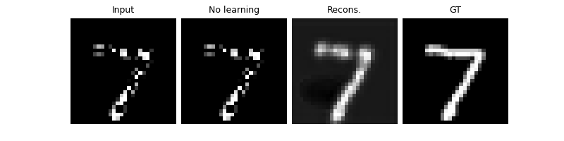
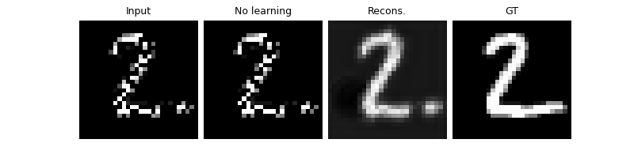
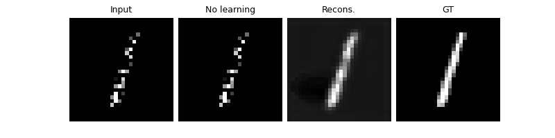
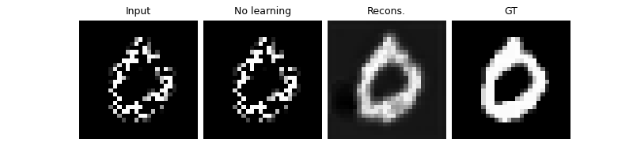
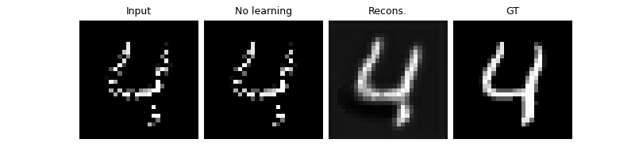

Note
Go to the end to download the full example code
Self-supervised learning from incomplete measurements of multiple operators.
This example shows you how to train a reconstruction network for an inpainting inverse problem on a fully self-supervised way, i.e., using measurement data only.
The dataset consists of pairs \((y_i,A_{g_i})\) where \(y_i\) are the measurements and \(A_{g_i}\) is a binary sampling operator out of \(G\) (i.e., \(g_i\in \{1,\dots,G\}\)).
This self-supervised learning approach is presented in “Unsupervised Learning From Incomplete Measurements for Inverse Problems”, and minimizes the loss function:
where \(R_{\theta}\) is a reconstruction network with parameters \(\theta\), \(y_i\) are the measurements, \(A_s\) is a binary sampling operator, and \(\hat{x}_{i,\theta} = R_{\theta}(y_i,A_{g_i})\).
import deepinv as dinv
from torch.utils.data import DataLoader
import torch
from pathlib import Path
from torchvision import transforms
from deepinv.models.utils import get_weights_url
from deepinv.training_utils import train, test
from torchvision import datasets
Setup paths for data loading and results.
BASE_DIR = Path(".")
ORIGINAL_DATA_DIR = BASE_DIR / "datasets"
DATA_DIR = BASE_DIR / "measurements"
RESULTS_DIR = BASE_DIR / "results"
DEG_DIR = BASE_DIR / "degradations"
CKPT_DIR = BASE_DIR / "ckpts"
# Set the global random seed from pytorch to ensure reproducibility of the example.
torch.manual_seed(0)
device = dinv.utils.get_freer_gpu() if torch.cuda.is_available() else "cpu"
Load base image datasets and degradation operators.
In this example, we use the MNIST dataset for training and testing.
transform = transforms.Compose([transforms.ToTensor()])
train_base_dataset = datasets.MNIST(
root="../datasets/", train=True, transform=transform, download=True
)
test_base_dataset = datasets.MNIST(
root="../datasets/", train=False, transform=transform, download=True
)
Generate a dataset of subsampled images and load it.
We generate 10 different inpainting operators, each one with a different random mask.
If the deepinv.datasets.generate_dataset() receives a list of physics operators, it
generates a dataset for each operator and returns a list of paths to the generated datasets.
Note
We only use 10 training images per operator to reduce the computational time of this example. You can use the whole
dataset by setting n_images_max = None.
number_of_operators = 10
# defined physics
physics = [
dinv.physics.Inpainting(mask=0.5, tensor_size=(1, 28, 28), device=device)
for _ in range(number_of_operators)
]
# Use parallel dataloader if using a GPU to reduce training time,
# otherwise, as all computes are on CPU, use synchronous data loading.
num_workers = 4 if torch.cuda.is_available() else 0
n_images_max = (
None if torch.cuda.is_available() else 50
) # number of images used for training (uses the whole dataset if you have a gpu)
operation = "inpainting"
my_dataset_name = "demo_multioperator_imaging"
measurement_dir = DATA_DIR / "MNIST" / operation
deepinv_datasets_path = dinv.datasets.generate_dataset(
train_dataset=train_base_dataset,
test_dataset=test_base_dataset,
physics=physics,
device=device,
save_dir=measurement_dir,
train_datapoints=n_images_max,
test_datapoints=10,
num_workers=num_workers,
dataset_filename=str(my_dataset_name),
)
train_dataset = [
dinv.datasets.HDF5Dataset(path=path, train=True) for path in deepinv_datasets_path
]
test_dataset = [
dinv.datasets.HDF5Dataset(path=path, train=False) for path in deepinv_datasets_path
]
Computing train measurement vectors from base dataset of operator 1 out of 10...
0%| | 0/1 [00:00<?, ?it/s]
100%|██████████| 1/1 [00:00<00:00, 419.72it/s]
Computing test measurement vectors from base dataset of operator 1 out of 10...
0%| | 0/1 [00:00<?, ?it/s]
100%|██████████| 1/1 [00:00<00:00, 985.27it/s]
Computing train measurement vectors from base dataset of operator 2 out of 10...
0%| | 0/1 [00:00<?, ?it/s]
100%|██████████| 1/1 [00:00<00:00, 531.87it/s]
Computing test measurement vectors from base dataset of operator 2 out of 10...
0%| | 0/1 [00:00<?, ?it/s]
100%|██████████| 1/1 [00:00<00:00, 1021.75it/s]
Computing train measurement vectors from base dataset of operator 3 out of 10...
0%| | 0/1 [00:00<?, ?it/s]
100%|██████████| 1/1 [00:00<00:00, 533.36it/s]
Computing test measurement vectors from base dataset of operator 3 out of 10...
0%| | 0/1 [00:00<?, ?it/s]
100%|██████████| 1/1 [00:00<00:00, 1012.87it/s]
Computing train measurement vectors from base dataset of operator 4 out of 10...
0%| | 0/1 [00:00<?, ?it/s]
100%|██████████| 1/1 [00:00<00:00, 540.36it/s]
Computing test measurement vectors from base dataset of operator 4 out of 10...
0%| | 0/1 [00:00<?, ?it/s]
100%|██████████| 1/1 [00:00<00:00, 989.69it/s]
Computing train measurement vectors from base dataset of operator 5 out of 10...
0%| | 0/1 [00:00<?, ?it/s]
100%|██████████| 1/1 [00:00<00:00, 542.74it/s]
Computing test measurement vectors from base dataset of operator 5 out of 10...
0%| | 0/1 [00:00<?, ?it/s]
100%|██████████| 1/1 [00:00<00:00, 996.75it/s]
Computing train measurement vectors from base dataset of operator 6 out of 10...
0%| | 0/1 [00:00<?, ?it/s]
100%|██████████| 1/1 [00:00<00:00, 534.78it/s]
Computing test measurement vectors from base dataset of operator 6 out of 10...
0%| | 0/1 [00:00<?, ?it/s]
100%|██████████| 1/1 [00:00<00:00, 1011.16it/s]
Computing train measurement vectors from base dataset of operator 7 out of 10...
0%| | 0/1 [00:00<?, ?it/s]
100%|██████████| 1/1 [00:00<00:00, 518.65it/s]
Computing test measurement vectors from base dataset of operator 7 out of 10...
0%| | 0/1 [00:00<?, ?it/s]
100%|██████████| 1/1 [00:00<00:00, 1009.46it/s]
Computing train measurement vectors from base dataset of operator 8 out of 10...
0%| | 0/1 [00:00<?, ?it/s]
100%|██████████| 1/1 [00:00<00:00, 534.44it/s]
Computing test measurement vectors from base dataset of operator 8 out of 10...
0%| | 0/1 [00:00<?, ?it/s]
100%|██████████| 1/1 [00:00<00:00, 1027.76it/s]
Computing train measurement vectors from base dataset of operator 9 out of 10...
0%| | 0/1 [00:00<?, ?it/s]
100%|██████████| 1/1 [00:00<00:00, 525.93it/s]
Computing test measurement vectors from base dataset of operator 9 out of 10...
0%| | 0/1 [00:00<?, ?it/s]
100%|██████████| 1/1 [00:00<00:00, 1023.75it/s]
Computing train measurement vectors from base dataset of operator 10 out of 10...
0%| | 0/1 [00:00<?, ?it/s]
100%|██████████| 1/1 [00:00<00:00, 529.45it/s]
Computing test measurement vectors from base dataset of operator 10 out of 10...
0%| | 0/1 [00:00<?, ?it/s]
100%|██████████| 1/1 [00:00<00:00, 1016.31it/s]
Dataset has been saved in measurements/MNIST/inpainting
Set up the reconstruction network
As a reconstruction network, we use a simple artifact removal network based on a U-Net. The network is defined as a \(R_{\theta}(y,A)=\phi_{\theta}(A^{\top}y)\) where \(\phi\) is the U-Net.
# Define the unfolded trainable model.
model = dinv.models.ArtifactRemoval(
backbone_net=dinv.models.UNet(in_channels=1, out_channels=1, scales=3)
)
model = model.to(device)
Set up the training parameters
We choose a self-supervised training scheme with two losses: the measurement consistency loss (MC) and the multi-operator imaging loss (MOI). Necessary and sufficient conditions on the number of operators and measurements are described here.
Note
We use a pretrained model to reduce training time. You can get the same results by training from scratch for 100 epochs.
epochs = 1
learning_rate = 5e-4
batch_size = 64 if torch.cuda.is_available() else 1
# choose self-supervised training losses
# generates 4 random rotations per image in the batch
losses = [dinv.loss.MCLoss(), dinv.loss.MOILoss(physics)]
# choose optimizer and scheduler
optimizer = torch.optim.Adam(model.parameters(), lr=learning_rate, weight_decay=1e-8)
scheduler = torch.optim.lr_scheduler.StepLR(optimizer, step_size=int(epochs * 0.8) + 1)
# start with a pretrained model to reduce training time
file_name = "demo_moi_ckp_10.pth"
url = get_weights_url(model_name="demo", file_name=file_name)
ckpt = torch.hub.load_state_dict_from_url(
url, map_location=lambda storage, loc: storage, file_name=file_name
)
# load a checkpoint to reduce training time
model.load_state_dict(ckpt["state_dict"])
optimizer.load_state_dict(ckpt["optimizer"])
Downloading: "https://huggingface.co/deepinv/demo/resolve/main/demo_moi_ckp_10.pth?download=true" to /home/runner/.cache/torch/hub/checkpoints/demo_moi_ckp_10.pth
0%| | 0.00/23.8M [00:00<?, ?B/s]
80%|████████ | 19.1M/23.8M [00:00<00:00, 200MB/s]
100%|██████████| 23.8M/23.8M [00:00<00:00, 215MB/s]
Train the network
verbose = True # print training information
wandb_vis = False # plot curves and images in Weight&Bias
train_dataloader = [
DataLoader(dataset, batch_size=batch_size, num_workers=num_workers, shuffle=True)
for dataset in train_dataset
]
test_dataloader = [
DataLoader(dataset, batch_size=batch_size, num_workers=num_workers, shuffle=False)
for dataset in test_dataset
]
train(
model=model,
train_dataloader=train_dataloader,
eval_dataloader=test_dataloader,
epochs=epochs,
scheduler=scheduler,
losses=losses,
physics=physics,
optimizer=optimizer,
device=device,
save_path=str(CKPT_DIR / operation),
verbose=verbose,
wandb_vis=wandb_vis,
ckp_interval=10,
)
The model has 2069441 trainable parameters
0%| | 0/5 [00:00<?, ?it/s]
Epoch 1: 0%| | 0/5 [00:00<?, ?it/s]
Epoch 1: 0%| | 0/5 [00:00<?, ?it/s, eval_psnr=23.5, loss_mc=0.00131, loss_moi=0.000454, total_loss=0.00177, train_psnr=20]
Epoch 1: 0%| | 0/5 [00:00<?, ?it/s, eval_psnr=23.5, loss_mc=0.000946, loss_moi=0.00427, total_loss=0.00522, train_psnr=20.9]
Epoch 1: 0%| | 0/5 [00:00<?, ?it/s, eval_psnr=23.5, loss_mc=0.00169, loss_moi=0.00734, total_loss=0.00903, train_psnr=19.3]
Epoch 1: 0%| | 0/5 [00:00<?, ?it/s, eval_psnr=23.5, loss_mc=0.0029, loss_moi=0.00811, total_loss=0.011, train_psnr=19]
Epoch 1: 0%| | 0/5 [00:00<?, ?it/s, eval_psnr=23.5, loss_mc=0.00475, loss_moi=0.00865, total_loss=0.0134, train_psnr=18.2]
Epoch 1: 0%| | 0/5 [00:00<?, ?it/s, eval_psnr=23.5, loss_mc=0.00557, loss_moi=0.00878, total_loss=0.0143, train_psnr=17.8]
Epoch 1: 0%| | 0/5 [00:00<?, ?it/s, eval_psnr=23.5, loss_mc=0.00631, loss_moi=0.00939, total_loss=0.0157, train_psnr=17.4]
Epoch 1: 0%| | 0/5 [00:00<?, ?it/s, eval_psnr=23.5, loss_mc=0.00659, loss_moi=0.00987, total_loss=0.0165, train_psnr=17.1]
Epoch 1: 0%| | 0/5 [00:00<?, ?it/s, eval_psnr=23.5, loss_mc=0.00657, loss_moi=0.00961, total_loss=0.0162, train_psnr=17]
Epoch 1: 0%| | 0/5 [00:00<?, ?it/s, eval_psnr=23.5, loss_mc=0.00642, loss_moi=0.00891, total_loss=0.0153, train_psnr=16.9]
Epoch 1: 20%|██ | 1/5 [00:00<00:02, 1.91it/s, eval_psnr=23.5, loss_mc=0.00642, loss_moi=0.00891, total_loss=0.0153, train_psnr=16.9]
Epoch 1: 20%|██ | 1/5 [00:00<00:02, 1.91it/s, eval_psnr=23.5, loss_mc=0.00642, loss_moi=0.00891, total_loss=0.0153, train_psnr=16.9]
Epoch 1: 20%|██ | 1/5 [00:00<00:02, 1.91it/s, eval_psnr=23.5, loss_mc=0.00593, loss_moi=0.00891, total_loss=0.0148, train_psnr=16.7]
Epoch 1: 20%|██ | 1/5 [00:00<00:02, 1.91it/s, eval_psnr=23.5, loss_mc=0.00565, loss_moi=0.00912, total_loss=0.0148, train_psnr=16.7]
Epoch 1: 20%|██ | 1/5 [00:00<00:02, 1.91it/s, eval_psnr=23.5, loss_mc=0.00537, loss_moi=0.00886, total_loss=0.0142, train_psnr=16.9]
Epoch 1: 20%|██ | 1/5 [00:00<00:02, 1.91it/s, eval_psnr=23.5, loss_mc=0.00527, loss_moi=0.00864, total_loss=0.0139, train_psnr=16.9]
Epoch 1: 20%|██ | 1/5 [00:00<00:02, 1.91it/s, eval_psnr=23.5, loss_mc=0.00507, loss_moi=0.0086, total_loss=0.0137, train_psnr=16.9]
Epoch 1: 20%|██ | 1/5 [00:00<00:02, 1.91it/s, eval_psnr=23.5, loss_mc=0.00487, loss_moi=0.00872, total_loss=0.0136, train_psnr=16.9]
Epoch 1: 20%|██ | 1/5 [00:00<00:02, 1.91it/s, eval_psnr=23.5, loss_mc=0.0048, loss_moi=0.00865, total_loss=0.0134, train_psnr=16.9]
Epoch 1: 20%|██ | 1/5 [00:00<00:02, 1.91it/s, eval_psnr=23.5, loss_mc=0.00474, loss_moi=0.00861, total_loss=0.0134, train_psnr=16.9]
Epoch 1: 20%|██ | 1/5 [00:00<00:02, 1.91it/s, eval_psnr=23.5, loss_mc=0.00465, loss_moi=0.00836, total_loss=0.013, train_psnr=17]
Epoch 1: 20%|██ | 1/5 [00:01<00:02, 1.91it/s, eval_psnr=23.5, loss_mc=0.00456, loss_moi=0.00813, total_loss=0.0127, train_psnr=17]
Epoch 1: 40%|████ | 2/5 [00:01<00:01, 1.94it/s, eval_psnr=23.5, loss_mc=0.00456, loss_moi=0.00813, total_loss=0.0127, train_psnr=17]
Epoch 1: 40%|████ | 2/5 [00:01<00:01, 1.94it/s, eval_psnr=23.5, loss_mc=0.00456, loss_moi=0.00813, total_loss=0.0127, train_psnr=17]
Epoch 1: 40%|████ | 2/5 [00:01<00:01, 1.94it/s, eval_psnr=23.5, loss_mc=0.00442, loss_moi=0.00842, total_loss=0.0128, train_psnr=16.9]
Epoch 1: 40%|████ | 2/5 [00:01<00:01, 1.94it/s, eval_psnr=23.5, loss_mc=0.00431, loss_moi=0.00825, total_loss=0.0126, train_psnr=17.1]
Epoch 1: 40%|████ | 2/5 [00:01<00:01, 1.94it/s, eval_psnr=23.5, loss_mc=0.00426, loss_moi=0.00811, total_loss=0.0124, train_psnr=17.1]
Epoch 1: 40%|████ | 2/5 [00:01<00:01, 1.94it/s, eval_psnr=23.5, loss_mc=0.00417, loss_moi=0.00794, total_loss=0.0121, train_psnr=17.2]
Epoch 1: 40%|████ | 2/5 [00:01<00:01, 1.94it/s, eval_psnr=23.5, loss_mc=0.00423, loss_moi=0.00774, total_loss=0.012, train_psnr=17.2]
Epoch 1: 40%|████ | 2/5 [00:01<00:01, 1.94it/s, eval_psnr=23.5, loss_mc=0.0043, loss_moi=0.00771, total_loss=0.012, train_psnr=17.1]
Epoch 1: 40%|████ | 2/5 [00:01<00:01, 1.94it/s, eval_psnr=23.5, loss_mc=0.00433, loss_moi=0.00762, total_loss=0.012, train_psnr=17.2]
Epoch 1: 40%|████ | 2/5 [00:01<00:01, 1.94it/s, eval_psnr=23.5, loss_mc=0.00432, loss_moi=0.00748, total_loss=0.0118, train_psnr=17.2]
Epoch 1: 40%|████ | 2/5 [00:01<00:01, 1.94it/s, eval_psnr=23.5, loss_mc=0.00427, loss_moi=0.00741, total_loss=0.0117, train_psnr=17.4]
Epoch 1: 40%|████ | 2/5 [00:01<00:01, 1.94it/s, eval_psnr=23.5, loss_mc=0.00417, loss_moi=0.00736, total_loss=0.0115, train_psnr=17.5]
Epoch 1: 60%|██████ | 3/5 [00:01<00:01, 1.93it/s, eval_psnr=23.5, loss_mc=0.00417, loss_moi=0.00736, total_loss=0.0115, train_psnr=17.5]
Epoch 1: 60%|██████ | 3/5 [00:01<00:01, 1.93it/s, eval_psnr=23.5, loss_mc=0.00417, loss_moi=0.00736, total_loss=0.0115, train_psnr=17.5]
Epoch 1: 60%|██████ | 3/5 [00:01<00:01, 1.93it/s, eval_psnr=23.5, loss_mc=0.00409, loss_moi=0.00714, total_loss=0.0112, train_psnr=17.5]
Epoch 1: 60%|██████ | 3/5 [00:01<00:01, 1.93it/s, eval_psnr=23.5, loss_mc=0.00401, loss_moi=0.00719, total_loss=0.0112, train_psnr=17.5]
Epoch 1: 60%|██████ | 3/5 [00:01<00:01, 1.93it/s, eval_psnr=23.5, loss_mc=0.00392, loss_moi=0.00738, total_loss=0.0113, train_psnr=17.5]
Epoch 1: 60%|██████ | 3/5 [00:01<00:01, 1.93it/s, eval_psnr=23.5, loss_mc=0.00383, loss_moi=0.00748, total_loss=0.0113, train_psnr=17.4]
Epoch 1: 60%|██████ | 3/5 [00:01<00:01, 1.93it/s, eval_psnr=23.5, loss_mc=0.00375, loss_moi=0.00728, total_loss=0.011, train_psnr=17.4]
Epoch 1: 60%|██████ | 3/5 [00:01<00:01, 1.93it/s, eval_psnr=23.5, loss_mc=0.00369, loss_moi=0.00725, total_loss=0.0109, train_psnr=17.5]
Epoch 1: 60%|██████ | 3/5 [00:01<00:01, 1.93it/s, eval_psnr=23.5, loss_mc=0.00372, loss_moi=0.00714, total_loss=0.0109, train_psnr=17.5]
Epoch 1: 60%|██████ | 3/5 [00:01<00:01, 1.93it/s, eval_psnr=23.5, loss_mc=0.00367, loss_moi=0.00699, total_loss=0.0107, train_psnr=17.6]
Epoch 1: 60%|██████ | 3/5 [00:02<00:01, 1.93it/s, eval_psnr=23.5, loss_mc=0.00364, loss_moi=0.00698, total_loss=0.0106, train_psnr=17.6]
Epoch 1: 60%|██████ | 3/5 [00:02<00:01, 1.93it/s, eval_psnr=23.5, loss_mc=0.00358, loss_moi=0.00689, total_loss=0.0105, train_psnr=17.8]
Epoch 1: 80%|████████ | 4/5 [00:02<00:00, 1.94it/s, eval_psnr=23.5, loss_mc=0.00358, loss_moi=0.00689, total_loss=0.0105, train_psnr=17.8]
Epoch 1: 80%|████████ | 4/5 [00:02<00:00, 1.94it/s, eval_psnr=23.5, loss_mc=0.00358, loss_moi=0.00689, total_loss=0.0105, train_psnr=17.8]
Epoch 1: 80%|████████ | 4/5 [00:02<00:00, 1.94it/s, eval_psnr=23.5, loss_mc=0.00353, loss_moi=0.00673, total_loss=0.0103, train_psnr=17.8]
Epoch 1: 80%|████████ | 4/5 [00:02<00:00, 1.94it/s, eval_psnr=23.5, loss_mc=0.0035, loss_moi=0.00667, total_loss=0.0102, train_psnr=17.9]
Epoch 1: 80%|████████ | 4/5 [00:02<00:00, 1.94it/s, eval_psnr=23.5, loss_mc=0.00349, loss_moi=0.00657, total_loss=0.0101, train_psnr=17.9]
Epoch 1: 80%|████████ | 4/5 [00:02<00:00, 1.94it/s, eval_psnr=23.5, loss_mc=0.00344, loss_moi=0.00653, total_loss=0.00997, train_psnr=18]
Epoch 1: 80%|████████ | 4/5 [00:02<00:00, 1.94it/s, eval_psnr=23.5, loss_mc=0.0034, loss_moi=0.00643, total_loss=0.00983, train_psnr=18]
Epoch 1: 80%|████████ | 4/5 [00:02<00:00, 1.94it/s, eval_psnr=23.5, loss_mc=0.00335, loss_moi=0.00635, total_loss=0.0097, train_psnr=18.1]
Epoch 1: 80%|████████ | 4/5 [00:02<00:00, 1.94it/s, eval_psnr=23.5, loss_mc=0.0033, loss_moi=0.00643, total_loss=0.00973, train_psnr=18.1]
Epoch 1: 80%|████████ | 4/5 [00:02<00:00, 1.94it/s, eval_psnr=23.5, loss_mc=0.00326, loss_moi=0.00643, total_loss=0.00969, train_psnr=18.1]
Epoch 1: 80%|████████ | 4/5 [00:02<00:00, 1.94it/s, eval_psnr=23.5, loss_mc=0.00321, loss_moi=0.00635, total_loss=0.00956, train_psnr=18.2]
Epoch 1: 80%|████████ | 4/5 [00:02<00:00, 1.94it/s, eval_psnr=23.5, loss_mc=0.00315, loss_moi=0.00625, total_loss=0.0094, train_psnr=18.3]
Epoch 1: 100%|██████████| 5/5 [00:02<00:00, 1.93it/s, eval_psnr=23.5, loss_mc=0.00315, loss_moi=0.00625, total_loss=0.0094, train_psnr=18.3]
Epoch 1: 100%|██████████| 5/5 [00:02<00:00, 1.93it/s, eval_psnr=23.5, loss_mc=0.00315, loss_moi=0.00625, total_loss=0.0094, train_psnr=18.3]
ArtifactRemoval(
(backbone_net): UNet(
(Maxpool): MaxPool2d(kernel_size=2, stride=2, padding=0, dilation=1, ceil_mode=False)
(Conv1): Sequential(
(0): Conv2d(1, 64, kernel_size=(3, 3), stride=(1, 1), padding=(1, 1))
(1): BatchNorm2d(64, eps=1e-05, momentum=0.1, affine=True, track_running_stats=True)
(2): ReLU(inplace=True)
(3): Conv2d(64, 64, kernel_size=(3, 3), stride=(1, 1), padding=(1, 1))
(4): BatchNorm2d(64, eps=1e-05, momentum=0.1, affine=True, track_running_stats=True)
(5): ReLU(inplace=True)
)
(Conv2): Sequential(
(0): Conv2d(64, 128, kernel_size=(3, 3), stride=(1, 1), padding=(1, 1))
(1): BatchNorm2d(128, eps=1e-05, momentum=0.1, affine=True, track_running_stats=True)
(2): ReLU(inplace=True)
(3): Conv2d(128, 128, kernel_size=(3, 3), stride=(1, 1), padding=(1, 1))
(4): BatchNorm2d(128, eps=1e-05, momentum=0.1, affine=True, track_running_stats=True)
(5): ReLU(inplace=True)
)
(Conv3): Sequential(
(0): Conv2d(128, 256, kernel_size=(3, 3), stride=(1, 1), padding=(1, 1))
(1): BatchNorm2d(256, eps=1e-05, momentum=0.1, affine=True, track_running_stats=True)
(2): ReLU(inplace=True)
(3): Conv2d(256, 256, kernel_size=(3, 3), stride=(1, 1), padding=(1, 1))
(4): BatchNorm2d(256, eps=1e-05, momentum=0.1, affine=True, track_running_stats=True)
(5): ReLU(inplace=True)
)
(Up3): Sequential(
(0): Upsample(scale_factor=2.0, mode='nearest')
(1): Conv2d(256, 128, kernel_size=(3, 3), stride=(1, 1), padding=(1, 1))
(2): BatchNorm2d(128, eps=1e-05, momentum=0.1, affine=True, track_running_stats=True)
(3): ReLU(inplace=True)
)
(Up_conv3): Sequential(
(0): Conv2d(256, 128, kernel_size=(3, 3), stride=(1, 1), padding=(1, 1))
(1): BatchNorm2d(128, eps=1e-05, momentum=0.1, affine=True, track_running_stats=True)
(2): ReLU(inplace=True)
(3): Conv2d(128, 128, kernel_size=(3, 3), stride=(1, 1), padding=(1, 1))
(4): BatchNorm2d(128, eps=1e-05, momentum=0.1, affine=True, track_running_stats=True)
(5): ReLU(inplace=True)
)
(Up2): Sequential(
(0): Upsample(scale_factor=2.0, mode='nearest')
(1): Conv2d(128, 64, kernel_size=(3, 3), stride=(1, 1), padding=(1, 1))
(2): BatchNorm2d(64, eps=1e-05, momentum=0.1, affine=True, track_running_stats=True)
(3): ReLU(inplace=True)
)
(Up_conv2): Sequential(
(0): Conv2d(128, 64, kernel_size=(3, 3), stride=(1, 1), padding=(1, 1))
(1): BatchNorm2d(64, eps=1e-05, momentum=0.1, affine=True, track_running_stats=True)
(2): ReLU(inplace=True)
(3): Conv2d(64, 64, kernel_size=(3, 3), stride=(1, 1), padding=(1, 1))
(4): BatchNorm2d(64, eps=1e-05, momentum=0.1, affine=True, track_running_stats=True)
(5): ReLU(inplace=True)
)
(Conv_1x1): Conv2d(64, 1, kernel_size=(1, 1), stride=(1, 1))
)
)
Test the network
plot_images = True
method = "multioperator_imaging"
test(
model=model,
test_dataloader=test_dataloader,
physics=physics,
device=device,
plot_images=plot_images,
save_folder=RESULTS_DIR / method / operation,
verbose=verbose,
wandb_vis=wandb_vis,
)
- 
- 
- 
- 
- 
Processing data of operator 1 out of 10
0%| | 0/1 [00:00<?, ?it/s]
100%|██████████| 1/1 [00:01<00:00, 1.07s/it]
100%|██████████| 1/1 [00:01<00:00, 1.07s/it]
Processing data of operator 2 out of 10
0%| | 0/1 [00:00<?, ?it/s]
100%|██████████| 1/1 [00:01<00:00, 1.07s/it]
100%|██████████| 1/1 [00:01<00:00, 1.07s/it]
Processing data of operator 3 out of 10
0%| | 0/1 [00:00<?, ?it/s]
100%|██████████| 1/1 [00:01<00:00, 1.07s/it]
100%|██████████| 1/1 [00:01<00:00, 1.07s/it]
Processing data of operator 4 out of 10
0%| | 0/1 [00:00<?, ?it/s]
100%|██████████| 1/1 [00:01<00:00, 1.07s/it]
100%|██████████| 1/1 [00:01<00:00, 1.07s/it]
Processing data of operator 5 out of 10
0%| | 0/1 [00:00<?, ?it/s]
100%|██████████| 1/1 [00:01<00:00, 1.09s/it]
100%|██████████| 1/1 [00:01<00:00, 1.09s/it]
Processing data of operator 6 out of 10
0%| | 0/1 [00:00<?, ?it/s]
100%|██████████| 1/1 [00:00<00:00, 91.00it/s]
Processing data of operator 7 out of 10
0%| | 0/1 [00:00<?, ?it/s]
100%|██████████| 1/1 [00:00<00:00, 96.95it/s]
Processing data of operator 8 out of 10
0%| | 0/1 [00:00<?, ?it/s]
100%|██████████| 1/1 [00:00<00:00, 86.61it/s]
Processing data of operator 9 out of 10
0%| | 0/1 [00:00<?, ?it/s]
100%|██████████| 1/1 [00:00<00:00, 82.34it/s]
Processing data of operator 10 out of 10
0%| | 0/1 [00:00<?, ?it/s]
100%|██████████| 1/1 [00:00<00:00, 99.47it/s]
Test PSNR: No learning rec.: 13.10+-1.74 dB | Model: 20.47+-1.86 dB.
(20.46658115386963, 1.8617128902874014, 13.103665447235107, 1.7379694923885824)
Total running time of the script: (0 minutes 8.626 seconds)